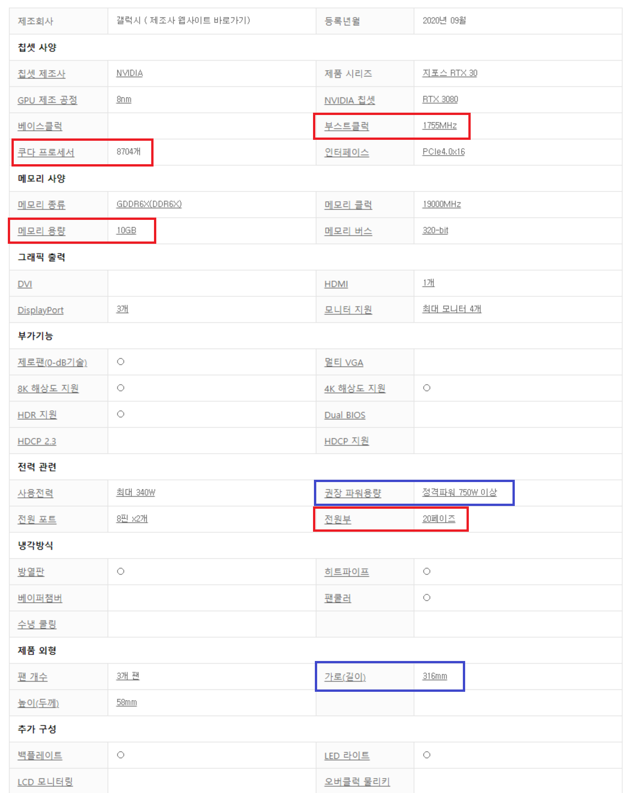

그래픽카드
이미지를 디스플레이 장치로 출력하는 컴퓨터 하드웨어의 부품이자 확장 카드 입니다. 대부분의 그래픽 카드는 단순한 디스플레이 출력에 국한되지 않고 여러 역할을 합니다.
일반적으로 그래픽카드는 인쇄 회로 기판의 형태로 제조되어 확장 슬롯에 장착됩니다. 일부 그래픽 카드는 전용 외장 케이스가 있어 도킹 스테이션이나 케이블을 통해 컴퓨터에 연결합니다.
우리가 일반적으로 사용하는 그래픽카드의 회사는 크게 3곳이 있습니다. Nvidia, AMD, Intel입니다. 세 회사 중 Intel은 CPU 내장 그래픽만을 제작합니다.
그래서 우리가 보아야 할 회사는 Intel을 제외한 Nvidia와 AMD입니다.
Nvidia의 그래픽카드부터 예시를 통해 설명하겠습니다. 일반적으로 우리가 구매하는 Nvidia의 그래픽카드 이름을 봅시다.
이엠텍 지포스 RTX 3080 BLACK EDITION OC D6X 10GB 를 예시로 들겠습니다.
이엠텍 : 비 레퍼런스 모델의 제조 회사입니다. 그래픽카드는 레퍼런스 모델과 비 레퍼런스 모델이 존재합니다. 레퍼런스 모델은 엔비디아에서 직접 설계하고 제작한 그래픽카드입니다.
그리고 비 레퍼런스는 그러하지 아니한 그래픽카드입니다. 여기서 의문이 하나 생길 수 있습니다. '앞에서 그래픽카드를 제조하는 회사는 Nvidia와 AMD 뿐이라고 하지 않았나요?' 라는 의문이 생길 수 있습니다.
정확히는 그래픽카드의 내부 부품들을 제조하는 회사라고 볼 수 있습니다. 따라서 비 레퍼런스 모델을 제조하는 회사는 Nvidia 또는 AMD 로부터 내부 부품을 구매하여 각 회사별 개성과 스타일에 따라 그래픽카드를 생산합니다.
따라서 각 브랜드별로 성능을 선호하는지, 낮은 가격을 선호하는지 등 여러 차이가 있으며 브랜드 내에서도 급을 나누어 판매하고 있습니다.
우리가 일반적으로 접근하는 경로인 쇼핑몰 등에서는 비 레퍼런스 모델이 주를 이루고 있습니다.
지포스 RTX 3080 : 가장 중요한 그래픽카드 제품군 이름입니다. 숫자의 천의 자리는 세대를 의미하고, 십의 자리는 세대별 제품군을 의미합니다. 십의 자리에서는 50, 60, 70, 80, 90이 존재하며 일부 세대에서는 50이나 90이 존재하지 않습니다.
BLACK EDITION : 각 브랜드 내에서 나누는 제품군의 이름입니다. 일반적으로 각 회사의 보급형, 중급형, 고급형, 하이엔드급 을 의미하는 이름을 붙입니다.
OC D6X 10GB : 각 제품에 성능상에서 특징적인 부분을 이름에 표기한 것입니다. 주로 OC(오버클럭 유무), DRAM 용량 등을 표기합니다.

출처 : 다나와 닷컴 갤럭시 3080 그래픽카드 제품 상세설명
빨간색 사각형은 반드시 보아야 하는 것, 파란색 사각형은 참고해야 하는 것 입니다. 빨간색 사각형부터 보겠습니다.
부스트클럭 : CPU와 마찬가지로 그래픽카드 또한 동작 클럭 수가 존재하며 이는 성능을 나타내는 지표중 하나입니다.
쿠다 프로세서 : 그래픽카드의 성능을 나타내는 지표 중 하나입니다. 개수가 많을수록 더 높은 성능을 나타냅니다.
메모리 용량 : 그래픽카드의 성능을 나타내는 지표 중 하나입니다. 용량이 더 높을수록 더 높은 성능을 나타냅니다.
전원부 : 그래픽카드가 얼마만큼의 전력을 받을 수 있는지를 나타내는 지표입니다. 페이즈 수가 높을수록 더 높은 성능을 낼 수 있습니다.
다음은 파란색 사각형을 보겠습니다.
권장 파워용량 : 그래픽카드 제조사에서 공개한 권장 파워용량입니다. 단순 그래픽카드의 전력량만을 나타내는 것이 아닌, 일반적으로 사용하는 환경에서의 CPU, 저장장치 등의 전력소모량 또한 계산하여 공개하는 수치입니다.
파워 용량을 정하는데에 어려움이 있을때, 그래픽카드의 권장 파워용량을 지표로 삼는 것이 좋습니다.
가로(길이) : 그래픽카드의 가로 길이입니다. 그래픽카드는 일반적으로 가로로 긴 형태를 띄고있는데, 시대가 지남에 따라, 더 많고 큰 쿠다 프로세서를 탑재하기 위해서 점점 더 그래픽카드의 크기가 커지고 있는 상황입니다.
따라서 그래픽카드를 구매할 때에, 케이스의 가로 길이 몇 mm(밀리미터)인지 충분히 계산하거나 알아볼 필요가 있습니다.
1. 유튜브, 넷플릭스, 웹서핑, 간단 문서작업, 학부생 수준의 코딩
60만원 이하의 저렴한 컴퓨터를 구매하는 경우입니다. 이 경우 별도의 그래픽카드를 구매하는 것이 아닌, CPU자체의 내장 그래픽카드만을 사용하는 것이 좋습니다.
주로 'F' 네이밍이 붙지 않은 Intel CPU나 'G','U' 네이밍이 붙은 AMD CPU를 사용합니다.
리그오브레전드, 메이플스토리 등 저사양 게임 또한 60FPS의 환경에서 충분히 즐길 수 있는 수준입니다.
2. 오버워치, 배틀그라운드 등의 중간 수준 사양의 게임을 60FPS이상으로 즐기고 싶은 경우
RX570, GTX1650, GTX1650super, GTX1660, GTX1660super, RTX3060 제품군을 추천합니다. 기재된 순서대로 뒤로 갈수록 사양이 좋은 제품이며 RX570과 RTX3060은 차이가 많이 나는 수준입니다.
일반적으로 super 네이밍을 가진 제품이 가성비가 좋은 편입니다.
3. 고사양 게임 60FPS 이상, 중사양 게임의 144FPS 이상, QHD 또는 4k 해상도서의 게임
RTX3070 이상을 권장합니다. 단, RTX3090은 권장하지 않습니다. RTX3080과 5% 정도의 성능차이를 보이지만 가격은 2배 차이가 나기 때문입니다.
번외. 그래픽, 영상, 렌더링 등의 작업
이는 프로그램별로 요구하는 그래픽카드의 수준이 제각각 천차만별이기에 따로 특정 제품군을 추천해드리기에는 많은 어려움이 있습니다. 따라서 본인이 사용하고있거나 사용할 프로그램이 어느 정도 수준의 그래픽카드를 요구하는지 반드시 사전에 알아보시기 바랍니다.